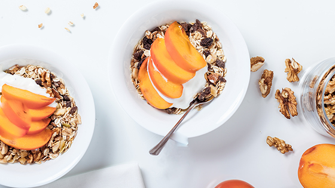

Buckwheat can reduce weight and blood lipids.
2021-03-10

KEEP
蕎麥含維生素B1、維生素B2、維生素E、膳食纖維、鉀、鈣、磷等，其中維生素B1、B2含量比白米來得高，身體代謝、修護時不可缺的營養素，且鉀含量也是白米的４倍，有助於改善水腫，穩定血壓。
常見的蕎麥有兩種，一種是俗稱「甜蕎」的普通蕎麥；另一種韃靼蕎麥具有苦味，也稱作「苦蕎」。蕎麥主要功能性成分為：芸香苷、槲皮素、異槲皮素、兒茶素等。
芸香苷(Rutin)在醫學上已被確定對視網膜出血、毛血管中風及冠狀動脈阻塞有顯著療效，另外，對血管具擴張強化作用。
蕎麥這樣吃最對味
蕎麥脫殼後，可分為蕎麥粒和蕎麥粉。蕎麥粒通常加入餅乾或麵包中；蕎麥粉則因不含麩質，不像一般麵粉可直接形成有彈性的麵糰，所以蕎麥粉需要搭配一定比例的麵粉才能製成相關產品，例如蕎麥麵條。有麩質過敏的民眾，可選擇蕎麥比例較高的產品當作主食。
現代飲食過於精緻，膳食纖維攝取不足，六大類食物中的主食也強調「全穀雜糧類」，建議可以在白米中添加蕎麥，補充膳食纖維，適量的全穀類主食，對於糖尿病患者的血糖上升幅度也會相對穩定，但是有腸胃道潰瘍的民眾，可先諮詢營養師確認是否可食用。
除了豐富的膳食纖維，蕎麥當中的磷和鉀含量也相對較高，腎臟病患者於食用前應詢問醫師或營養師，避免增加腎臟負擔。
